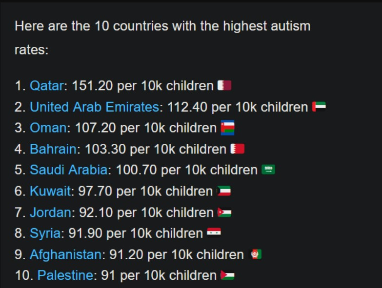

Islamist Excuse: First-cousin marriage does not bring much danger.
Our Response:
- Islamic Allah is not only responsible for cousin marriages but also responsible for cousin marriages extending Multiple Generations, resulting in indeed various genetic diseases affecting innocent children.
- Additionally, the "sex-segregated" system imposed by Islamic teachings makes it nearly impossible for young boys and girls to interact and get to know each other, leading to a continued pattern of cousin marriages across multiple generations.
Actually, there is no all-knowing Allah present in the heavens. And Muhammad was making the Revelations on his own. Since Muhammad was only a human (and not all-knowing), he also didn't know about the harms of cousin marriages.
In the absence of this knowledge, Muhammad found no problem in accepting the ancient Arab custom of marriage with cousins and extending it to multiple generations.
Based on two reports by BBC (Report1 & Report 2):
- It is estimated that at least 55% of British Pakistanis marry their cousins, and this practice persists into the second generation.
- According to statistics, British Pakistanis are 13 times more likely to have children with genetic disorders than the general population of Britain.
- In Birmingham city, 10% of children born to first cousins either die in infancy or develop severe disabilities due to recessive genetic disorders.
- Although the Pakistani community comprises only 3% of all births in Britain, they account for 33% of all British children with such disabilities. This means that if 55% of British Pakistanis have cousin marriages, then the 1.5% population of Britons who engage in first cousin marriages accounts for 33% of all British children with genetic disorders. [Source: Paper by Darr and Modell published in 2002 - Genetic Counselling and customary consanguineous marriage. Nature Reviews: Genetics, Vol 3 March 2002]
According to the DAWN Newspaper (Pakistan):
- The Universities of Bradford and Leeds together did a study in Pakistan. According to this study, 77% of all disabled Pakistani children were born due to cousin marriages.
- In the city of Charsadda (Pakistan), 90% of people marry their cousins. Consequently, every third family has had a disabled child with genetic disorders for the past 40 years. While the people of this city are aware of the reasons behind these issues, the practice of marrying cousins continues due to the influence of the religion of Islam.
According to the "The News" newspaper (Pakistan):
- Cousin marriages in Pakistan account for 73 per cent, leading to the country having the largest community of deaf children worldwide.
-
The estimated number of people suffering from genetic diseases in Pakistan ranges between 14 to 16 million, with 1.6 million mutations identified in the country.

Religious Indoctrination Triumphs Over Awareness:
A recent scientific Study (which was done even on a bigger scale) reported (link) that this trend of cousin marriages has further increased in the British Pakistani community in recent years. It happened despite spreading awareness about the dangers of cousin marriages.
This simply means that awareness was defeated at the hands of religious indoctrination.
So, what are the alternatives?
- Do we allow this situation to persist, subjecting innocent children to the severe consequences of genetic disorders and enduring a lifetime of suffering?
- Or do we take action to mitigate this extreme human suffering by implementing laws alongside awareness campaigns?
It's evident that children born with genetic disorders endure significant pain throughout their lives. If politicians truly prioritize human welfare, they must empathize with the immense suffering of these innocent children. They should not fear accusations of Islamophobia or political backlash. Instead, they should prioritize humanity above all else and make the morally sound decision.
Marriage with Cousins is also incest
The rate of shared common genes among close relatives is as follows:
- Parents/Children: 50% shared genes
- Siblings: 50% shared genes
- Uncle/Niece: 25% shared genes
- Siblings (who share only one biological parent): 25% shared genes
- First Cousins: 12.5% shared genes
- Second Cousins: 3.125% shared genes
Double Cousin Marriages:
Islam also allows double-cousin marriages, which genetically equate to having intercourse with one's aunt (i.e., 25% shared genes). While all Muslims would likely condemn a marriage between an aunt and her nephew (or between siblings who share one parent), unfortunately, many are unaware that their religion also sanctions such unions.
Why have cousin marriages become more problematic for Muslims in the present era compared to the past?
In the past centuries, cousin marriages did not pose such a serious challenge for Muslims due to various factors:
- Aggressive Conquests: In the past, Muslims engaged in aggressive wars, capturing women from other nations, and fathering many children through such encounters.
- Slave Trade: Muslims would purchase slave women from markets and maintain large harems with multiple slave wives.
- Polygamy: The practice of polygamy was common, leading to multiple marriages, and many of these unions were not with cousins.
These factors contributed to a situation where Muslim societies were not as severely impacted by the health risks associated with cousin marriages.
However, circumstances have changed in the present era:
- End of Slavery: Slavery has already been abolished, and the practice of purchasing slave women has ceased.
- Decline of Aggressive Wars: Muslims no longer engage in offensive wars, resulting in the inability to capture non-Muslim women.
- Reduced Polygamy: The practice of polygamy has diminished, and Muslims now have limited opportunities to choose life partners, often leading to them selecting their cousin sisters as the first and only choice.
As a result, cousin marriages have become a significant concern for Muslims in the present era.
Furthermore, Islamic teachings on hijab and modesty have contributed to the creation of a relatively isolated family system, where young boys and girls have limited interactions with each other outside of their immediate families, with the exception of interactions between cousins. This limited social interaction often leads to feelings developing between cousin boys and girls. The close-knit family system, shaped by Islamic teachings, has contributed to the prevalence of cousin marriages in Islamic societies. For many Muslim women, marrying a familiar figure, such as a cousin, can be seen as a more comfortable and secure option than marrying a complete stranger.
Strange Islam: Breastfeeding milk makes a person unlawful to marry, but cousin incest marriages does not
Islam dictates that if a woman breastfeeds a male child (or an adult man) five times, then her daughter becomes a "sister," and it becomes forbidden to marry her.
However, modern science contradicts this notion, showing that breastfeeding a child (or an adult) five times (or even hundreds of times) does not result in genetic changes or cause genetic disorders in their progeny if they marry the daughter of that woman.
This practice originated from the traditions of Arab society during a time of ignorance, and Muhammad adhered to it without intervention from an All-Knowing Allah to correct the mistake.
It is worth reflecting on the similarity of this concept with certain aspects found in Hinduism, where cows are regarded as mothers due to drinking their milk, as described in their religious texts
Autism: Muslim countries have the highest rates

Reference:
- World Population Review (2020)
- World Population Review (2021)
- World Population Review (2022)
- World Population Review (2023)
First Excuse by Islamists: Dismissing Science as Unreliable
Islamic Preachers, unfortunately, deceive both Muslims and non-Muslims by claiming that science cannot be trusted because it changes over time. In doing so, they deliberately confuse "scientific hypotheses" with "scientific facts/laws".
While it is true that scientific hypotheses may evolve or prove incorrect based on experimental evidence, some findings have solidified into "Scientific Facts/Laws" that are not subject to change. For instance, the fact that the Earth is a sphere, not flat, is firmly established and will not alter. Similarly, the link between cousin marriages and disabled children with genetic disorders has been scientifically proven, and this fact remains steadfast.
Regrettably, the value of "Scientific Facts" still pales in comparison to the overpowering influence of "Blind Belief" fostered by religious indoctrination.
Second Excuse by Islamists: Propagating Fabricated Ahadith
Certain Muslim apologists engage in spreading Ahadith that discourages marrying close relatives. However, it is crucial to note that these Ahadith are fabricated and cannot be found in any authentic Hadith books of Muslims. To illustrate this deception, let us reference a quote from a Muslim website itself (link):
Question: Did the Prophet (peace be upon him) discourage marrying relatives (ie. cousins) even though it is lawful?
Answer:The short answer is that there are certain narrations that discourage marrying cousins, yet experts of hadith verification have determined them to be extremely weak or fabricated.
The Narrations in Question
– “Do not marry within the family [i.e., cousins], as that leads to children that are thin and weak.”
– “Do not marry within the family [i.e., cousins], since the child would be born thin and weak.”
– “Marry outside the family, lest the offspring be thin and weak.” [Ibn Hajar, Talkhis al-Habir]
Regarding these and similar narrations, the 7th century hadith specialist Ibn Salah said, “I found no reliable basis for them.” Many eminent hadith masters mentioned his statement and concurred, such as Ibn Hajar al-Asqalani, Ibn Mulaqqin, and others. [Ibn Hajar, Talkhis al-Habir; Ibn Mulaqqin, Khulasat al-Badr]
Taj al-Subki said regarding these narrations, “I found no chain of transmission (isnad) for them.” [Subki, Ahadith al-Ihya Alati La Asla Laha]
Hence it can be concluded that these narrations — as statements of the Prophet (peace and blessings be upon him) — are fabricated.
After mentioning Ibn Salah’s verdict, Hafiz Iraqi does state that it was rather Sayyidina Umar who made such a statement, specifically in response to a certain family/tribe whose offspring were thin and weak. He said, “You all have become thin and weak, so marry outside the family.” [Iraqi, Takhrij Ahadith al-Ihya’]
Thus, there is no Hadith from Muhammad that discourages marrying within the family.
In fact, the historical accounts present a different scenario:
- Muhammad himself fell in love with his first cousin Umm Hani, who happened to be the daughter of Abu Talib. However, Abu Talib declined the marriage proposal as Muhammad was not only poor but also lacked skills to earn a living. Consequently, Abu Talib did not consider Muhammad to be suitable enough to marry his daughter (link).
- Subsequently, Muhammad went on to marry Zainab bint Jahsh, who was his cousin-sister.
Regarding Umar's statement, it's important to note that he neither held the authority of Allah nor was he a prophet, thus his words do not constitute a part of Sharia.
Umar's suggestion was based on a common observation from ancient times that marrying strong women tended to produce stronger offspring, while marrying weak women led to weaker children. Consequently, when Umar noticed that the tribe of al-Sa'ib was becoming physically weaker, he specifically advised them to marry individuals who were more intelligent and stronger than themselves (had the people of al-Sa'ib been stronger, Umar would not have made this suggestion to them). Therefore, this was an exceptional case and not a general recommendation in Islamic Sharia. Sharia does not have a universal mandate to marry outside the family.
Furthermore, some Muslim apologists present the following argument (link):
عن الشافعي قال: أيما أهل بيت لم يخرج نساؤهم إلى رجال غيرهم كان في أولادهم حمق.
Al-Shafi’i said, “Whenever the people of a household do not allow their women to marry men outside of their line, there will be fools among their children.”
Once more, it is important to clarify that this saying attributed to al-Shafi'i is not a part of Sharia. Instead, it reflects a common observation among people during that era that marrying within the family could lead to health issues in the offspring. As a matter of fact, even Ibn Hajar al-Asqallani, another renowned Muslim scholar, rejected its inclusion in Islamic Sharia, and he wrote (link):
وأما قول بعض الشافعية يستحب أن لا تكون المرأة ذات قرابة قريبة فإن كان مستندا إلى الخبر فلا أصل له أو إلى التجربة وهو أن الغالب ان الولد بين القريبين يكون أحمق
The saying of some Shafi'i scholars suggests that it is preferable for a woman not to be closely related in kinship. However, this is not based on Hadith, it has no basis, and it is only be based on observation, which assumes that children born from close relatives tend to be less intelligent.
Therefore, Islamic Sharia does not offer any recommendation to avoid incestuous marriages with cousins.
Third Excuse by Islamists: Genetic Testing is Enough and Cousin Marriages Should Not Be Banned
Today, Islamic apologists claim that:
Cousin marriages should not be banned as genetic testing corrects the risk of cousin marriages.
Response:
Would Muslims allow marriage between siblings and Uncle/Niece too if such genetic tests approve it?
The rate of shared common genes among close relatives is as follows:
- Siblings: 50% shared genes
- Uncle/Niece: 25% shared genes
- Siblings (who share only one common parent): 25% shared genes
- First Cousins: 12.5% shared genes
Unfortunately, people who are carriers of genetic diseases have no family history of recessive genetic conditions. The absence of family history does NOT decrease risk.
And unfortunately, there is no way to test for absolutely everything. Some recessive genetic conditions are extremely rare and potentially exclusive to your family that a normal carrier screening panel cannot detect.
Comprehensive genetic testing could not identify the cause. This means they would not have tested positive on carrier screening. This also means we cannot test future pregnancies to see if they are affected, we just have to monitor with ultrasound and see what happens knowing that there is a 25% risk in each pregnancy. It’s very likely that the couple carries one of these very rare genetic changes that is unique to their family and that we are unable to detect with our current technology.
Conclusion:
There is no All-Knowing Allah present in the heavens; rather, it was Muhammad himself who established this religion based on his own beliefs and practices. He adhered to the traditions of the ignorant Arabs during that era. Consequently, for all the innocent children born with genetic disorders as a result of cousin marriages (extending multiple generations), Muhammad bears responsibility for their suffering.
Important Documentary:


 Hassan Radwan
Hassan Radwan